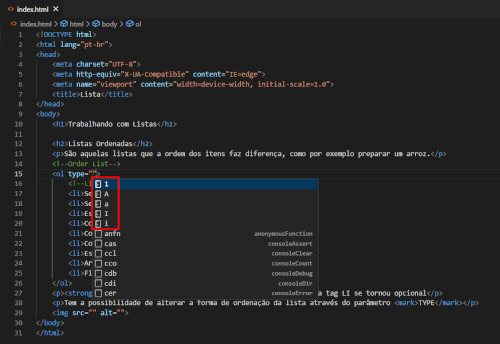

São aquelas listas que a ordem dos itens faz diferença, como por exemplo preparar um arroz.
Atenção!
A partir do HTML5 o fechamento da tag LI se tornou opcional
Tem a possibilidade de alterar a forma de ordenação da lista através do parâmetro TYPE
Para alterar o indicador inicial da lista ordenada, você pode adicionar o parâmetro START e informar qual o início.
Atenção! em teste, só funcionou com números.
Listas onde a ordem dos fatores não impacta. Um exemplo, uma lista de compras
Atenção! essa lista também possui tipos de marcação de item diferentes:
Estes são: